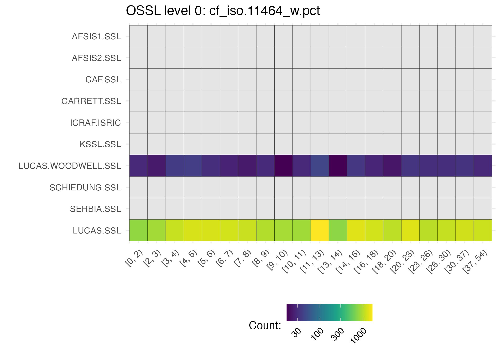

2 Database description
In this section you can find a detailed description of the OSSL database, which includes the variable names, types, human-readable description, and example values. You can also find all this information in tabular format:
- OSSL soil site data.
- OSSL soil lab data (level 0).
- OSSL soil lab data (level 1).
- OSSL soil MIR data.
- OSSL soil VisNIR data.
2.1 Soil site data
2.1.1 dataset.code_ascii_txt
- 📚 Description: OSSL dataset code.
- 🔢 Type: string.
- 📖 Example: AFSIS1.SSL.
2.1.2 id.layer_uuid_txt
- 📚 Description: OSSL unique identifier.
- 🔢 Type: string.
- 📖 Example: ded584d70bf0474202d30e575ae24784.
2.1.3 id.layer_local_c
- 📚 Description: Original observation identifier.
- 🔢 Type: string.
- 📖 Example: icr072246.
2.1.4 longitude.point_wgs84_dd
- 📚 Description: Longitude in decimal degrees (WGS84, EPSG 4326).
- 🔢 Type: numeric.
- 📖 Example: 15.6874916700.
2.1.5 latitude.point_wgs84_dd
- 📚 Description: Latitude in decimal degrees (WGS84, EPSG 4326).
- 🔢 Type: numeric.
- 📖 Example: -7.37775000.
2.1.6 layer.sequence_usda_uint16
- 📚 Description: Layer sequence (incremented in depth).
- 🔢 Type: numeric.
- 📖 Example: 1.
2.1.7 layer.upper.depth_usda_cm
- 📚 Description: Layer top depth in cm.
- 🔢 Type: numeric.
- 📖 Example: 0.0.
2.1.8 layer.lower.depth_usda_cm
- 📚 Description: Layer bottom depth in cm.
- 🔢 Type: numeric.
- 📖 Example: 20.0.
2.1.9 observation.date.begin_iso.8601_yyyy.mm.dd
- 📚 Description: Begin date of observation following YYYY-MM-DD format (ISO 8601).
- 🔢 Type: numeric.
- 📖 Example: 2011-01-01.
2.1.10 observation.date.end_iso.8601_yyyy.mm.dd
- 📚 Description: End date of observation following YYYY-MM-DD format (ISO 8601).
- 🔢 Type: numeric.
- 📖 Example: 2013-12-31.
2.1.11 surveyor.title_utf8_txt
- 📚 Description: Field surveyor name or organization.
- 🔢 Type: string.
- 📖 Example: L.T.Desta.
2.1.12 id.project_ascii_txt
- 📚 Description: Project name.
- 🔢 Type: string.
- 📖 Example: Africa Soil Information Service (AfSIS-1).
2.1.13 id.location_olc_txt
- 📚 Description: Unique Open Location Code with a precision of 6 decimal places in point coordinates.
- 🔢 Type: string.
- 📖 Example: 6F4QJMCP+VX.
2.1.14 layer.texture_usda_txt
- 📚 Description: Texture description based on USDA classification.
- 🔢 Type: string.
- 📖 Example: sand.
2.1.15 pedon.taxa_usda_txt
- 📚 Description: Soil classification based on the USDA Keys to Soil Taxonomy.
- 🔢 Type: string.
- 📖 Example: Typic Kanhaplustalf.
2.1.16 horizon.designation_usda_txt
- 📚 Description: Soil horizon based on the USDA Keys to Soil Taxonomy.
- 🔢 Type: string.
- 📖 Example: Ap.
2.1.17 longitude.county_wgs84_dd
- 📚 Description: County centroid, longitude in decimal degrees (WGS84, EPSG 4326).
- 🔢 Type: numeric.
- 📖 Example: -96.688800.
2.1.18 latitude.county_wgs84_dd
- 📚 Description: County centroid, latitude in decimal degrees (WGS84, EPSG 4326).
- 🔢 Type: numeric.
- 📖 Example: 40.78446.
2.1.19 location.point.error_any_m
- 📚 Description: Approximate point location error in m.
- 🔢 Type: numeric.
- 📖 Example: 30.
2.1.20 location.country_iso.3166_txt
- 📚 Description: Country code following ISO 3166.
- 🔢 Type: string.
- 📖 Example: NZL.
2.1.21 observation.ogc.schema.title_ogc_txt
- 📚 Description: Observation OGC schema title.
- 🔢 Type: string.
- 📖 Example: Open Soil Spectroscopy Library.
2.1.22 observation.ogc.schema_idn_url
- 📚 Description: Observation OGC schema url.
- 🔢 Type: string.
- 📖 Example: https://soilspectroscopy.github.io.
2.1.23 surveyor.contact_ietf_email
- 📚 Description: Surveyor contact email.
- 🔢 Type: string.
- 📖 Example: afsis.info@africasoils.net.
2.1.24 surveyor.address_utf8_txt
- 📚 Description: Surveyor or institution address.
- 🔢 Type: string.
- 📖 Example: ICRAF, PO Box 30677, Nairobi, 00100, Kenya.
2.1.25 dataset.title_utf8_txt
- 📚 Description: Dataset name.
- 🔢 Type: string.
- 📖 Example: Africa Soil Information Service (AfSIS-1).
2.1.26 dataset.owner_utf8_txt
- 📚 Description: Name of of organization or person that is the responsible for the dataset.
- 🔢 Type: string.
- 📖 Example: ICRAF, CROPNUTS, RRES.
2.1.27 dataset.address_idn_url
- 📚 Description: URL address of the dataset web page.
- 🔢 Type: string.
- 📖 Example: https://www.isric.org/explore/ISRIC-collections.
2.1.28 dataset.doi_idf_url
- 📚 Description: Digital object identifier (DOI) url of the dataset.
- 🔢 Type: string.
- 📖 Example: https://doi.org/10.1016/j.geodrs.2015.06.002.
2.1.29 dataset.license.title_ascii_txt
- 📚 Description: Dataset license.
- 🔢 Type: string.
- 📖 Example: ODC Open Database License.
2.1.30 dataset.license.address_idn_url
- 📚 Description: Dataset license url.
- 🔢 Type: string.
- 📖 Example: https://opendatacommons.org/licenses/odbl/.
2.1.31 dataset.contact.name_utf8_txt
- 📚 Description: Dataset contact name.
- 🔢 Type: string.
- 📖 Example: Keith Shepherd.
2.1.32 dataset.contact_ietf_email
- 📚 Description: Dataset contact email.
- 🔢 Type: string.
- 📖 Example: afsis.info@africasoils.net.
2.1.33 id.dataset.site_ascii_txt
- 📚 Description: Site identification.
- 🔢 Type: string.
- 📖 Example: 203.
2.2 Soil laboratory (wet chemistry) data
2.2.1 dataset.code_ascii_txt
- 📚 Description: Dataset code used for internal reference. It can be alternatively described as
OSSL dataset code. - 📠Measurement unit: Imported into the OSSL as
txt, i.e., text. - 🔢 Type: string.
- 📖 Example: AFSIS1.SSL.
2.2.2 id.layer_uuid_txt
- 📚 Description: Unique identifier. It can be alternatively described as
OSSL unique identifier. - 📠Measurement unit: Imported into the OSSL as
txt, i.e., text. - 🔢 Type: string.
- 📖 Example: ded584d70bf0474202d30e575ae24784.
2.2.3 acidity_usda.a795_cmolc.kg
- 📚 Description: Extractable acidity, BaCl2-TEA at pH 8.2, is a measure of the amount of acid neutralized at a set pH. It can be alternatively described as
Acidity, BaCl2-TEA Extractable, pH 8.2. - 📠Measurement unit: Imported into the OSSL as
cmolc.kg, i.e., centimoles of charge per kilogram of soil. - 🔢 Type: numeric.
- 📖 Example: 0.40000.
- 🟢 Availability: level 0 and level 1 (harmonized).
2.2.4 aggstb_usda.a1_w.pct
- 📚 Description: Aggregate stability is the weight percent of 0.5 mm - 2 mm aggregates remaining after wet sieving.. It can be alternatively described as
Aggregate Stability. - 📠Measurement unit: Imported into the OSSL as
w.pct, i.e., weight percent. - 🔢 Type: numeric.
- 📖 Example: 74.
- 🟢 Availability: level 0 and level 1 (harmonized).
2.2.5 al.dith_usda.a65_w.pct
- 📚 Description: Dithionite citrate extractable aluminum is an indicator of the amount of aluminum substituted for iron in iron oxides.. It can be alternatively described as
Aluminum, Crystalline, Total Pedogenic Iron. - 📠Measurement unit: Imported into the OSSL as
w.pct, i.e., weight percent. - 🔢 Type: numeric.
- 📖 Example: 0.13652.
- 🟢 Availability: level 0 and level 1 (harmonized).
2.2.6 al.ext_aquaregia_g.kg
- 📚 Description: Exchangeable Al.. It can be alternatively described as
Aluminum, Extractable, Aqua Regia. - 📠Measurement unit: Imported into the OSSL as
g.kg, i.e., grams per kilogram of soil. - 🔢 Type: numeric.
- 📖 Example: 42.9620831.
- 🟢 Availability: level 0 and level 1 (harmonized).
2.2.7 al.ext_usda.a1056_mg.kg
- 📚 Description: Exchangeable Al.. It can be alternatively described as
Aluminum, Extractable, Mehlich3. - 📠Measurement unit: Imported into the OSSL as
mg.kg, i.e., miligrams per kilogram of soil. - 🔢 Type: numeric.
- 📖 Example: 1270.00000.
- 🟢 Availability: level 0 and level 1 (harmonized).
2.2.8 al.ext_usda.a69_cmolc.kg
- 📚 Description: Exchangeable Al.. It can be alternatively described as
Aluminum, Extractable, KCl. - 📠Measurement unit: Imported into the OSSL as
cmolc.kg, i.e., centimoles of charge per kilogram of soil. - 🔢 Type: numeric.
- 📖 Example: 0.20000.
- 🟢 Availability: level 0 and level 1 (harmonized).
2.2.9 al.ox_usda.a59_w.pct
- 📚 Description: Ammonium oxalate extractable aluminum is an estimate of the total pedogenic Al, much of which may be in noncrystalline materials or complexed by organic matter.. It can be alternatively described as
Aluminum, Amorphous, Total Non-Crystalline Iron. - 📠Measurement unit: Imported into the OSSL as
w.pct, i.e., weight percent. - 🔢 Type: numeric.
- 📖 Example: 0.12951.
- 🟢 Availability: level 0 and level 1 (harmonized).
2.2.10 awc.33.1500kPa_usda.c80_w.frac
- 📚 Description: The amount (fraction) of water released between 1/3 (33 kPa) and 15 (1500 kPa) bar tensions determined as gravimetric percent.. It can be alternatively described as
Available Water Content, Difference 33-1500 kPa. - 📠Measurement unit: Imported into the OSSL as
w.frac, i.e., weight fraction. - 🔢 Type: numeric.
- 📖 Example: 0.08658.
- 🟢 Availability: level 0 and level 1 (harmonized).
2.2.11 b.ext_mel3_mg.kg
- 📚 Description: Plant available B.. It can be alternatively described as
Boron, Extractable, Mehlich3. - 📠Measurement unit: Imported into the OSSL as
mg.kg, i.e., miligrams per kilogram of soil. - 🔢 Type: numeric.
- 📖 Example: 0.00100000.
- 🟢 Availability: level 0 and level 1 (harmonized).
2.2.12 bd_iso.11272_g.cm3
- 📚 Description: Bulk density is the weight per unit volume of the fine earth fraction (<2 mm).. It can be alternatively described as
Bulk Density, iso 11272. - 📠Measurement unit: Imported into the OSSL as
g.cm3, i.e., grams per cubic centimeter. - 🔢 Type: numeric.
- 📖 Example: 1.57100.
- 🟡 Availability: only level 0.
2.2.13 bd_usda.a21_g.cm3
- 📚 Description: Bulk density is the weight per unit volume of the fine earth fraction (<2 mm).. It can be alternatively described as
Bulk Density, <2 mm fraction, Core. - 📠Measurement unit: Imported into the OSSL as
g.cm3, i.e., grams per cubic centimeter. - 🔢 Type: numeric.
- 📖 Example: 1.57100.
- 🟡 Availability: only level 0.
2.2.14 bd_usda.a4_g.cm3
- 📚 Description: Bulk density is the weight per unit volume of the fine earth fraction (<2 mm).. It can be alternatively described as
Bulk Density, <2mm fraction, Clod. - 📠Measurement unit: Imported into the OSSL as
g.cm3, i.e., grams per cubic centimeter. - 🔢 Type: numeric.
- 📖 Example: 1.3477999.
- 🟢 Availability: level 0 and level 1 (harmonized).
2.2.15 c.tot_iso.10694_w.pct
- 📚 Description: Total carbon is a measure of all organic and inorganic carbon, including that found in carbonate minerals.. It can be alternatively described as
Carbon, Total NCS, iso 10694. - 📠Measurement unit: Imported into the OSSL as
w.pct, i.e., weight percent. - 🔢 Type: numeric.
- 📖 Example: 3.668778009.
- 🟡 Availability: only level 0.
2.2.16 c.tot_usda.a622_w.pct
- 📚 Description: Total carbon is a measure of all organic and inorganic carbon, including that found in carbonate minerals.. It can be alternatively described as
Carbon, Total NCS. - 📠Measurement unit: Imported into the OSSL as
w.pct, i.e., weight percent. - 🔢 Type: numeric.
- 📖 Example: 1.55128592.
- 🟢 Availability: level 0 and level 1 (harmonized).
2.2.17 ca.ext_aquaregia_mg.kg
- 📚 Description: Exchangeable or plant available Ca.. It can be alternatively described as
Calcium, Extractable, Aqua Regia. - 📠Measurement unit: Imported into the OSSL as
mg.kg, i.e., miligrams per kilogram of soil. - 🔢 Type: numeric.
- 📖 Example: 368.535095.
- 🟢 Availability: level 0 and level 1 (harmonized).
2.2.18 ca.ext_usda.a1059_mg.kg
- 📚 Description: Exchangeable or plant available Ca.. It can be alternatively described as
Calcium, Extractable, Mehlich3. - 📠Measurement unit: Imported into the OSSL as
mg.kg, i.e., miligrams per kilogram of soil. - 🔢 Type: numeric.
- 📖 Example: 78.20000.
- 🟢 Availability: level 0 and level 1 (harmonized).
2.2.19 ca.ext_usda.a722_cmolc.kg
- 📚 Description: Exchangeable or plant available Ca.. It can be alternatively described as
Calcium, Extractable, NH4OAc. - 📠Measurement unit: Imported into the OSSL as
cmolc.kg, i.e., centimoles of charge per kilogram of soil. - 🔢 Type: numeric.
- 📖 Example: 2.617060178.
- 🟢 Availability: level 0 and level 1 (harmonized).
2.2.20 caco3_iso.10693_w.pct
- 📚 Description: Carbonate in the <2mm fraction is measured by CO2 evolution after acid treatment. It is reported as gravimetric percent CaCO3 on a <2 mm base, even though carbonates of Mg, Na, K, and Fe may be present and react with the acid.. It can be alternatively described as
Carbonate, iso 10693. - 📠Measurement unit: Imported into the OSSL as
w.pct, i.e., weight percent. - 🔢 Type: numeric.
- 📖 Example: 27.0.
- 🟡 Availability: only level 0.
2.2.21 caco3_usda.a54_w.pct
- 📚 Description: Carbonate in the <2mm fraction is measured by CO2 evolution after acid treatment. It is reported as gravimetric percent CaCO3 on a <2 mm base, even though carbonates of Mg, Na, K, and Fe may be present and react with the acid.. It can be alternatively described as
Carbonate, <2mm Fraction. - 📠Measurement unit: Imported into the OSSL as
w.pct, i.e., weight percent. - 🔢 Type: numeric.
- 📖 Example: 0.50000.
- 🟢 Availability: level 0 and level 1 (harmonized).
2.2.22 cec_iso.11260_cmolc.kg
- 📚 Description: Cation exchange capacity of a sample highly buffered at pH 7.0. It is reported as cmolc kg-1 (= meq per 100 grams) on a <2 mm base.. It can be alternatively described as
CEC, pH 7.0, iso 11260. - 📠Measurement unit: Imported into the OSSL as
cmolc.kg, i.e., centimoles of charge per kilogram of soil. - 🔢 Type: numeric.
- 📖 Example: 37.8.
- 🟡 Availability: only level 0.
2.2.23 cec_usda.a723_cmolc.kg
- 📚 Description: Cation exchange capacity of a sample highly buffered at pH 7.0. It is reported on a <2 mm base.. It can be alternatively described as
CEC, pH 7.0, NH4OAc, 2M KCl displacement. - 📠Measurement unit: Imported into the OSSL as
cmolc.kg, i.e., centimoles of charge per kilogram of soil. - 🔢 Type: numeric.
- 📖 Example: 6.6332171.
- 🟢 Availability: level 0 and level 1 (harmonized).
2.2.24 cf_iso.11464_w.pct
- 📚 Description: The gravimetric percentage of greater than 2 mm diameter particles reported on a whole soil base.. It can be alternatively described as
Coarse Fragments, iso 11464. - 📠Measurement unit: Imported into the OSSL as
w.pct, i.e., weight percent. - 🔢 Type: numeric.
- 📖 Example: 10.
- 🟡 Availability: only level 0.

2.2.25 cf_usda.c236_w.pct
- 📚 Description: The gravimetric percentage of greater than 2 mm diameter particles reported on a whole soil base.. It can be alternatively described as
Coarse Fragments, Greater 2mm. - 📠Measurement unit: Imported into the OSSL as
w.pct, i.e., weight percent. - 🔢 Type: numeric.
- 📖 Example: 4.00000.
- 🟢 Availability: level 0 and level 1 (harmonized).
2.2.26 clay.tot_iso.11277_w.pct
- 📚 Description: Total clay is the soil separate with <0.002 mm particle diameter. Clay size carbonate is included. It is reported on a <2 mm base.. It can be alternatively described as
Clay, iso 11277. - 📠Measurement unit: Imported into the OSSL as
w.pct, i.e., weight percent. - 🔢 Type: numeric.
- 📖 Example: 51.
- 🟡 Availability: only level 0.

2.2.27 clay.tot_usda.a334_w.pct
- 📚 Description: Total clay is the soil separate with <0.002 mm particle diameter. Clay size carbonate is included. It is reported on a <2 mm base.. It can be alternatively described as
Clay. - 📠Measurement unit: Imported into the OSSL as
w.pct, i.e., weight percent. - 🔢 Type: numeric.
- 📖 Example: 30.99000.
- 🟢 Availability: level 0 and level 1 (harmonized).
2.2.28 cu.ext_usda.a1063_mg.kg
- 📚 Description: Exchangeable or plant available Cu.. It can be alternatively described as
Copper, Extractable, Mehlich3. - 📠Measurement unit: Imported into the OSSL as
mg.kg, i.e., miligrams per kilogram of soil. - 🔢 Type: numeric.
- 📖 Example: 0.5600000.
- 🟢 Availability: level 0 and level 1 (harmonized).
2.2.29 ec_iso.11265_ds.m
- 📚 Description: Electrical conductivity. It is reported of a 1:2 soil:water mixture. It can be alternatively described as
Electrical Conductivity, iso 11265. - 📠Measurement unit: Imported into the OSSL as
ds.m, i.e., decisiemens per metre. - 🔢 Type: numeric.
- 📖 Example: 2.3350.
- 🟡 Availability: only level 0.
2.2.30 ec_usda.a364_ds.m
- 📚 Description: Electrical conductivity. It is reported of a 1:2 soil:water mixture. It can be alternatively described as
Electrical Conductivity, (w/w). - 📠Measurement unit: Imported into the OSSL as
ds.m, i.e., decisiemens per metre. - 🔢 Type: numeric.
- 📖 Example: 0.03100.
- 🟢 Availability: level 0 and level 1 (harmonized).
2.2.31 efferv_usda.a479_class
- 📚 Description: The visual effervescence of the prepared sample when treated with 1 N HCl.. It can be alternatively described as
Effervescense, 1N HCl. - 📠Measurement unit: Imported into the OSSL as
class, i.e., class of visual interpretation. - 🔢 Type: string.
- 📖 Example: none.
- 🟡 Availability: only level 0.
2.2.32 fe.dith_usda.a66_w.pct
- 📚 Description: Dithionite citrate extractable iron is considered a general measure of total pedogenic iron.. It can be alternatively described as
Iron, Crystalline, Total Pedogenic Iron. - 📠Measurement unit: Imported into the OSSL as
w.pct, i.e., weight percent. - 🔢 Type: numeric.
- 📖 Example: 1.09028.
- 🟢 Availability: level 0 and level 1 (harmonized).
2.2.33 fe.ext_aquaregia_g.kg
- 📚 Description: Exchangeable or plant available Fe.. It can be alternatively described as
Iron, Extractable, Aqua Regia. - 📠Measurement unit: Imported into the OSSL as
g.kg, i.e., grams per kilogram of soil. - 🔢 Type: numeric.
- 📖 Example: 71.9575342.
- 🟢 Availability: level 0 and level 1 (harmonized).
2.2.34 fe.ext_usda.a1064_mg.kg
- 📚 Description: Exchangeable or plant available Fe.. It can be alternatively described as
Iron, Extractable, Mehlich3. - 📠Measurement unit: Imported into the OSSL as
mg.kg, i.e., miligrams per kilogram of soil. - 🔢 Type: numeric.
- 📖 Example: 182.00000.
- 🟢 Availability: level 0 and level 1 (harmonized).
2.2.35 fe.ox_usda.a60_w.pct
- 📚 Description: Ammonium oxalate extractable iron is considered a measure of the noncrystalline Fe in soils.. It can be alternatively described as
Iron, Amorphous, Total Non-Crystalline Iron. - 📠Measurement unit: Imported into the OSSL as
w.pct, i.e., weight percent. - 🔢 Type: numeric.
- 📖 Example: 0.15422.
- 🟢 Availability: level 0 and level 1 (harmonized).
2.2.36 k.ext_aquaregia_mg.kg
- 📚 Description: Exchangeable or plant available K.. It can be alternatively described as
Potassium, Extractable, Aqua Regia. - 📠Measurement unit: Imported into the OSSL as
mg.kg, i.e., miligrams per kilogram of soil. - 🔢 Type: numeric.
- 📖 Example: 1781.400966.
- 🟢 Availability: level 0 and level 1 (harmonized).
2.2.37 k.ext_usda.a1065_mg.kg
- 📚 Description: Exchangeable or plant available K.. It can be alternatively described as
Potassium, Extractable, Mehlich3. - 📠Measurement unit: Imported into the OSSL as
mg.kg, i.e., miligrams per kilogram of soil. - 🔢 Type: numeric.
- 📖 Example: 47.000000.
- 🟢 Availability: level 0 and level 1 (harmonized).
2.2.38 k.ext_usda.a725_cmolc.kg
- 📚 Description: Exchangeable or plant available K.. It can be alternatively described as
Potassium, Extractable, NH4OAc, 2M KCl displacement. - 📠Measurement unit: Imported into the OSSL as
cmolc.kg, i.e., centimoles of charge per kilogram of soil. - 🔢 Type: numeric.
- 📖 Example: 0.200688352.
- 🟢 Availability: level 0 and level 1 (harmonized).
2.2.39 mg.ext_aquaregia_mg.kg
- 📚 Description: Exchangeable or plant available Mg.. It can be alternatively described as
Magnesium, Extractable, Aqua Regia. - 📠Measurement unit: Imported into the OSSL as
mg.kg, i.e., miligrams per kilogram of soil. - 🔢 Type: numeric.
- 📖 Example: 710.429099.
- 🟢 Availability: level 0 and level 1 (harmonized).
2.2.40 mg.ext_usda.a1066_mg.kg
- 📚 Description: Exchangeable or plant available Mg.. It can be alternatively described as
Magnesium, Extractable, Mehlich3. - 📠Measurement unit: Imported into the OSSL as
mg.kg, i.e., miligrams per kilogram of soil. - 🔢 Type: numeric.
- 📖 Example: 19.600000.
- 🟢 Availability: level 0 and level 1 (harmonized).
2.2.41 mg.ext_usda.a724_cmolc.kg
- 📚 Description: Exchangeable or plant available Mg.. It can be alternatively described as
Magnesium, Extractable, NH4OAc, 2M KCl displacement. - 📠Measurement unit: Imported into the OSSL as
cmolc.kg, i.e., centimoles of charge per kilogram of soil. - 🔢 Type: numeric.
- 📖 Example: 1.81655342.
- 🟢 Availability: level 0 and level 1 (harmonized).
2.2.42 mn.ext_aquaregia_mg.kg
- 📚 Description: Exchangeable or plant available Mn.. It can be alternatively described as
Manganese, Extractable, Aqua Regia. - 📠Measurement unit: Imported into the OSSL as
mg.kg, i.e., miligrams per kilogram of soil. - 🔢 Type: numeric.
- 📖 Example: 497.300369.
- 🟢 Availability: level 0 and level 1 (harmonized).
2.2.43 mn.ext_usda.a1067_mg.kg
- 📚 Description: Exchangeable or plant available Mn.. It can be alternatively described as
Manganese, Extractable, Mehlich3. - 📠Measurement unit: Imported into the OSSL as
mg.kg, i.e., miligrams per kilogram of soil. - 🔢 Type: numeric.
- 📖 Example: 23.10000000.
- 🟢 Availability: level 0 and level 1 (harmonized).
2.2.44 mn.ext_usda.a70_mg.kg
- 📚 Description: Exchangeable or plant available Mn.. It can be alternatively described as
Manganese, Extractable, KCl. - 📠Measurement unit: Imported into the OSSL as
mg.kg, i.e., miligrams per kilogram of soil. - 🔢 Type: numeric.
- 📖 Example: 0.62569.
- 🟢 Availability: level 0 and level 1 (harmonized).
2.2.45 n.tot_iso.11261_w.pct
- 📚 Description: Total nitrogen is a measure of all organic and inorganic nitrogen.. It can be alternatively described as
Nitrogen, Total NCS, iso 11261. - 📠Measurement unit: Imported into the OSSL as
w.pct, i.e., weight percent. - 🔢 Type: numeric.
- 📖 Example: 0.25.
- 🟡 Availability: only level 0.
2.2.46 n.tot_iso.13878_w.pct
- 📚 Description: Total nitrogen is a measure of all organic and inorganic nitrogen.. It can be alternatively described as
Nitrogen, Total NCS, iso 13878. - 📠Measurement unit: Imported into the OSSL as
w.pct, i.e., weight percent. - 🔢 Type: numeric.
- 📖 Example: 0.089.
- 🟡 Availability: only level 0.
2.2.47 n.tot_usda.a623_w.pct
- 📚 Description: Total nitrogen is a measure of all organic and inorganic nitrogen.. It can be alternatively described as
Nitrogen, Total NCS. - 📠Measurement unit: Imported into the OSSL as
w.pct, i.e., weight percent. - 🔢 Type: numeric.
- 📖 Example: 0.079766974.
- 🟢 Availability: level 0 and level 1 (harmonized).
2.2.48 na.ext_aquaregia_mg.kg
- 📚 Description: Exchangeable or plant availableNa.. It can be alternatively described as
Sodium, Extractable, Aqua Regia. - 📠Measurement unit: Imported into the OSSL as
mg.kg, i.e., miligrams per kilogram of soil. - 🔢 Type: numeric.
- 📖 Example: 75.986312.
- 🟢 Availability: level 0 and level 1 (harmonized).
2.2.49 na.ext_usda.a1068_mg.kg
- 📚 Description: Exchangeable or plant availableNa.. It can be alternatively described as
Sodium, Extractable, Mehlich3. - 📠Measurement unit: Imported into the OSSL as
mg.kg, i.e., miligrams per kilogram of soil. - 🔢 Type: numeric.
- 📖 Example: 17.800000.
- 🟢 Availability: level 0 and level 1 (harmonized).
2.2.50 na.ext_usda.a726_cmolc.kg
- 📚 Description: Exchangeable or plant availableNa.. It can be alternatively described as
Sodium, Extractable, NH4OAc, 2M KCl displacement. - 📠Measurement unit: Imported into the OSSL as
cmolc.kg, i.e., centimoles of charge per kilogram of soil. - 🔢 Type: numeric.
- 📖 Example: 0.124398521.
- 🟢 Availability: level 0 and level 1 (harmonized).
2.2.51 oc_iso.10694_w.pct
- 📚 Description: Estimated Organic Carbon based on Total C. It can be alternatively described as
Organic Carbon, iso 10694. - 📠Measurement unit: Imported into the OSSL as
w.pct, i.e., weight percent. - 🔢 Type: numeric.
- 📖 Example: 2.05000000.
- 🟡 Availability: only level 0.
2.2.52 oc_usda.c1059_w.pct
- 📚 Description: Estimated Organic Carbon based on Total C. It can be alternatively described as
Organic Carbon, Total C without CaCO3, N prep. - 📠Measurement unit: Imported into the OSSL as
w.pct, i.e., weight percent. - 🔢 Type: numeric.
- 📖 Example: 1.50336492.
- 🟡 Availability: only level 0.

2.2.53 oc_usda.c729_w.pct
- 📚 Description: Estimated Organic Carbon based on Total C. It can be alternatively described as
Organic Carbon, Total C without CaCO3, S prep. - 📠Measurement unit: Imported into the OSSL as
w.pct, i.e., weight percent. - 🔢 Type: numeric.
- 📖 Example: 2.9100.
- 🟢 Availability: level 0 and level 1 (harmonized).
2.2.54 p.ext_aquaregia_mg.kg
- 📚 Description: Plant available P.. It can be alternatively described as
Phosphorus, Extractable, Aqua Regia. - 📠Measurement unit: Imported into the OSSL as
mg.kg, i.e., miligrams per kilogram of soil. - 🔢 Type: numeric.
- 📖 Example: 608.30492.
- 🟢 Availability: level 0 and level 1 (harmonized).
2.2.55 p.ext_iso.11263_mg.kg
- 📚 Description: Plant available P.. It can be alternatively described as
Phosphorus, Extractable, iso 11263. - 📠Measurement unit: Imported into the OSSL as
mg.kg, i.e., miligrams per kilogram of soil. - 🔢 Type: numeric.
- 📖 Example: 72.4.
- 🟡 Availability: only level 0.
2.2.56 p.ext_usda.a1070_mg.kg
- 📚 Description: Plant available P.. It can be alternatively described as
Phosphorus, Extractable, Mehlich3. - 📠Measurement unit: Imported into the OSSL as
mg.kg, i.e., miligrams per kilogram of soil. - 🔢 Type: numeric.
- 📖 Example: 3.44739.
- 🟢 Availability: level 0 and level 1 (harmonized).
2.2.57 p.ext_usda.a270_mg.kg
- 📚 Description: Plant available P.. It can be alternatively described as
Phosphorus, Extractable, Bray1. - 📠Measurement unit: Imported into the OSSL as
mg.kg, i.e., miligrams per kilogram of soil. - 🔢 Type: numeric.
- 📖 Example: 50.5348939.
- 🟢 Availability: level 0 and level 1 (harmonized).
2.2.58 p.ext_usda.a274_mg.kg
- 📚 Description: Plant available P.. It can be alternatively described as
Phosphorus, Extractable, Olsen. - 📠Measurement unit: Imported into the OSSL as
mg.kg, i.e., miligrams per kilogram of soil. - 🔢 Type: numeric.
- 📖 Example: 17.23518992.
- 🟢 Availability: level 0 and level 1 (harmonized).
2.2.59 p.ext_usda.a652_mg.kg
- 📚 Description: Plant available P.. It can be alternatively described as
Phosphorus, Extractable, Mehlich3. - 📠Measurement unit: Imported into the OSSL as
mg.kg, i.e., miligrams per kilogram of soil. - 🔢 Type: numeric.
- 📖 Example: 9.770000.
- 🟡 Availability: only level 0.
2.2.60 ph.cacl2_iso.10390_index
- 📚 Description: pH of a sample measured in 0.01 M CaCl2 at a 1:2 soil:solution ratio.. It can be alternatively described as
pH, 1:2 Soil-CaCl2 Suspension, iso 10390. - 📠Measurement unit: Imported into the OSSL as
index, i.e., negative logarithm of the hydrogen ion concentration. - 🔢 Type: numeric.
- 📖 Example: 7.24.
- 🟡 Availability: only level 0.
2.2.61 ph.cacl2_usda.a477_index
- 📚 Description: pH of a sample measured in 0.01 M CaCl2 at a 1:2 soil:solution ratio.. It can be alternatively described as
pH, 1:2 Soil-CaCl2 Suspension, 0.01 M CaCl2. - 📠Measurement unit: Imported into the OSSL as
index, i.e., negative logarithm of the hydrogen ion concentration. - 🔢 Type: numeric.
- 📖 Example: 5.40.
- 🟡 Availability: only level 0.
2.2.62 ph.cacl2_usda.a481_index
- 📚 Description: pH of a sample measured in 0.01 M CaCl2 at a 1:2 soil:solution ratio.. It can be alternatively described as
pH, 1:2 Soil-CaCl2 Suspension. - 📠Measurement unit: Imported into the OSSL as
index, i.e., negative logarithm of the hydrogen ion concentration. - 🔢 Type: numeric.
- 📖 Example: 6.40000.
- 🟢 Availability: level 0 and level 1 (harmonized).
2.2.63 ph.h2o_iso.10390_index
- 📚 Description: pH of the 1:1 soil:water suspension.. It can be alternatively described as
pH, 1:1 Soil-Water Suspension, iso 10390. - 📠Measurement unit: Imported into the OSSL as
index, i.e., negative logarithm of the hydrogen ion concentration. - 🔢 Type: numeric.
- 📖 Example: 7.64.
- 🟡 Availability: only level 0.
2.2.64 ph.h2o_usda.a268_index
- 📚 Description: pH of the 1:1 soil:water suspension.. It can be alternatively described as
pH, 1:1 Soil-Water Suspension. - 📠Measurement unit: Imported into the OSSL as
index, i.e., negative logarithm of the hydrogen ion concentration. - 🔢 Type: numeric.
- 📖 Example: 5.10000.
- 🟢 Availability: level 0 and level 1 (harmonized).
2.2.65 s.ext_mel3_mg.kg
- 📚 Description: Exchangeable or plant available S.. It can be alternatively described as
Sulphur, Extractable, Mehlich3. - 📠Measurement unit: Imported into the OSSL as
mg.kg, i.e., miligrams per kilogram of soil. - 🔢 Type: numeric.
- 📖 Example: 16.800.
- 🟢 Availability: level 0 and level 1 (harmonized).
2.2.66 s.tot_usda.a624_w.pct
- 📚 Description: Total sulfur is a measure of all organic and inorganic sulfur, including that found in sulfide minerals.. It can be alternatively described as
Sulfur, Total NCS. - 📠Measurement unit: Imported into the OSSL as
w.pct, i.e., weight percent. - 🔢 Type: numeric.
- 📖 Example: 0.03569.
- 🟢 Availability: level 0 and level 1 (harmonized).
2.2.67 sand.tot_iso.11277_w.pct
- 📚 Description: Total sand is the soil separate with 0.05 to 2.0 mm particle diameter. It is reported on a <2 mm base.. It can be alternatively described as
Sand, Total, iso 11277. - 📠Measurement unit: Imported into the OSSL as
w.pct, i.e., weight percent. - 🔢 Type: numeric.
- 📖 Example: 9.
- 🟡 Availability: only level 0.
2.2.68 sand.tot_usda.c405_w.pct
- 📚 Description: Total sand is the soil separate with 0.05 to 2.0 mm particle diameter. It is reported on a <2 mm base.. It can be alternatively described as
Sand, Total, N prep. - 📠Measurement unit: Imported into the OSSL as
w.pct, i.e., weight percent. - 🔢 Type: numeric.
- 📖 Example: 79.4.
- 🟡 Availability: only level 0.
2.2.69 sand.tot_usda.c60_w.pct
- 📚 Description: Total sand is the soil separate with 0.05 to 2.0 mm particle diameter. It is reported on a <2 mm base.. It can be alternatively described as
Sand, Total, S prep. - 📠Measurement unit: Imported into the OSSL as
w.pct, i.e., weight percent. - 🔢 Type: numeric.
- 📖 Example: 50.37000.
- 🟢 Availability: level 0 and level 1 (harmonized).
2.2.70 silt.tot_iso.11277_w.pct
- 📚 Description: Total silt is the soil separate with 0.002 to 0.05 mm particle size. It is reported on a <2 mm base.. It can be alternatively described as
Silt, Total, iso 11277. - 📠Measurement unit: Imported into the OSSL as
w.pct, i.e., weight percent. - 🔢 Type: numeric.
- 📖 Example: 40.
- 🟡 Availability: only level 0.
2.2.71 silt.tot_usda.c407_w.pct
- 📚 Description: Total silt is the soil separate with 0.002 to 0.05 mm particle size. It is reported on a <2 mm base.. It can be alternatively described as
Silt, Total, N prep. - 📠Measurement unit: Imported into the OSSL as
w.pct, i.e., weight percent. - 🔢 Type: numeric.
- 📖 Example: 18.2.
- 🟡 Availability: only level 0.
2.2.72 silt.tot_usda.c62_w.pct
- 📚 Description: Total silt is the soil separate with 0.002 to 0.05 mm particle size. It is reported on a <2 mm base.. It can be alternatively described as
Silt, Total, S prep. - 📠Measurement unit: Imported into the OSSL as
w.pct, i.e., weight percent. - 🔢 Type: numeric.
- 📖 Example: 18.64000.
- 🟢 Availability: level 0 and level 1 (harmonized).
2.2.73 wr.10kPa_usda.a414_w.pct
- 📚 Description: The gravimetric percent water after equilibration at 1/10 bar (10 kPa) water tension.. It can be alternatively described as
Water Retention, 1/10 Bar (10 kPa). - 📠Measurement unit: Imported into the OSSL as
w.pct, i.e., weight percent. - 🔢 Type: numeric.
- 📖 Example: 10.852961.
- 🟢 Availability: level 0 and level 1 (harmonized).
2.2.74 wr.10kPa_usda.a8_w.pct
- 📚 Description: The gravimetric percent water after equilibration at 1/10 bar (10 kPa) water tension.. It can be alternatively described as
Water Retention, 1/10 Bar (10 kPa), Clod. - 📠Measurement unit: Imported into the OSSL as
w.pct, i.e., weight percent. - 🔢 Type: numeric.
- 📖 Example: 23.00000.
- 🟡 Availability: only level 0.
2.2.75 wr.1500kPa_usda.a417_w.pct
- 📚 Description: The gravimetric percent water after equilibration at 15 bar (1500 kPa) water tension.. It can be alternatively described as
Water Retention, 15 Bar (1500 kPa). - 📠Measurement unit: Imported into the OSSL as
w.pct, i.e., weight percent. - 🔢 Type: numeric.
- 📖 Example: 3.000000.
- 🟢 Availability: level 0 and level 1 (harmonized).
2.2.76 wr.33kPa_usda.a415_w.pct
- 📚 Description: The gravimetric percent water after equilibration at 1/3 bar (33 kPa) water tension.. It can be alternatively described as
Water Retention, 1/3 Bar (33 kPa). - 📠Measurement unit: Imported into the OSSL as
w.pct, i.e., weight percent. - 🔢 Type: numeric.
- 📖 Example: 29.17023.
- 🟢 Availability: level 0 and level 1 (harmonized).
2.2.77 wr.33kPa_usda.a9_w.pct
- 📚 Description: The gravimetric percent water after equilibration at 1/3 bar (33 kPa) water tension.. It can be alternatively described as
Water Retention, 1/3 Bar (33 kPa), Clod. - 📠Measurement unit: Imported into the OSSL as
w.pct, i.e., weight percent. - 🔢 Type: numeric.
- 📖 Example: 18.20000.
- 🟡 Availability: only level 0.
2.2.78 zn.ext_usda.a1073_mg.kg
- 📚 Description: Exchangeable or plant available Zn.. It can be alternatively described as
Zinc, Extractable, Mehlich3. - 📠Measurement unit: Imported into the OSSL as
mg.kg, i.e., miligrams per kilogram of soil. - 🔢 Type: numeric.
- 📖 Example: 1.0300000.
- 🟢 Availability: level 0 and level 1 (harmonized).

2.3 MIR scans
Middle-infrared (MIR) spectra is provided in absorbance units per wavenumber, with values usually ranging between 0 and 3. The spectral range imported into the OSSL falls between 600 and 4000 cm-1, with an interval of 2 cm-1. All datasets are harmonized to this specification.
One can convert reflectance (R) values to absorbance units (A) as A = log10(1/R), or backtransform with R = 1/(10^A). Similarly, headers containing wavenumbers (WN, in cm-1) can be converted to wavelength (WL, in nm) with WL = 1/(WN/10000000), or backtransformed with WN = 1/(WL/10000000). The factor 10M is used to convert cm to nm.
2.3.1 id.layer_uuid_txt
- 📚 Description: OSSL unique identifier.
- 🔢 Type: string.
- 📖 Example: 8585028b0344511c951fc0298b5ab3a8.
2.3.2 id.scan_local_c
- 📚 Description: Original scan identifier.
- 🔢 Type: string.
- 📖 Example: icr021044.
2.3.3 scan.mir.date.begin_iso.8601_yyyy.mm.dd
- 📚 Description: Begin date of scanning following YYYY-MM-DD format (ISO 8601).
- 🔢 Type: numeric.
- 📖 Example: 2009-01-01.
2.3.4 scan.mir.date.end_iso.8601_yyyy.mm.dd
- 📚 Description: Begin date of scanning following YYYY-MM-DD format (ISO 8601).
- 🔢 Type: numeric.
- 📖 Example: 2013-12-31.
2.3.5 scan.mir.model.name_utf8_txt
- 📚 Description: MIR instrument manufacturer, model and accessory (if any).
- 🔢 Type: string.
- 📖 Example: Bruker Tensor 27 with HTS-XT accessory.
2.3.6 scan.mir.model.code_any_txt
- 📚 Description: MIR instrument coding.
- 🔢 Type: string.
- 📖 Example: Bruker_Tensor_27.HTS.XT.
2.3.7 scan.mir.method.optics_any_txt
- 📚 Description: Metadata information related to instrument optics and measurements.
- 🔢 Type: string.
- 📖 Example: KBr beamsplitter; DTGS detector.
2.3.8 scan.mir.method.preparation_any_txt
- 📚 Description: Soil sample preparation before scanning.
- 🔢 Type: string.
- 📖 Example: Finely ground <80 mesh.
2.3.9 scan.mir.license.title_ascii_txt
- 📚 Description: Dataset scans license.
- 🔢 Type: string.
- 📖 Example: CC-BY.
2.3.10 scan.mir.license.address_idn_url
- 📚 Description: Dataset scans license url.
- 🔢 Type: string.
- 📖 Example: https://creativecommons.org/licenses/by/4.0/.
2.3.11 scan.mir.doi_idf_url
- 📚 Description: Digital object identifier (DOI) url of the dataset scans.
- 🔢 Type: string.
- 📖 Example: https://doi.org/10.34725/DVN/QXCWP1.
2.3.12 scan.mir.contact.name_utf8_txt
- 📚 Description: Dataset scans contact name.
- 🔢 Type: string.
- 📖 Example: Vagen, Tor-Gunnar (World Agroforestry).
2.3.13 scan.mir.contact.email_ietf_txt
- 📚 Description: Dataset scans contact email.
- 🔢 Type: string.
- 📖 Example: afsis.info@africasoils.net.
2.3.14 scan_mir.600_abs
- 📚 Description: Absorbance in log10 unit, first wavenumber in the 600-4000 cm-1 range.
- 🔢 Type: numeric.
- 📖 Example: 1.38812.
2.3.15 scan_mir.4000_abs
- 📚 Description: Absorbance in log10 unit, last wavenumber in the 600-4000 cm-1 range.
- 🔢 Type: numeric.
- 📖 Example: 0.2452604.
2.4 VisNIR scans
Visible and Near-Infrared (VisNIR) spectra is provided in reflectance units per wavelength, with values usually ranging between 0 and 1 as fraction percent. The spectral range imported into the OSSL falls between 350 and 2500 nm, with an interval of 2 nm. All datasets are harmonized to this specification.
One can convert reflectance (R) values to absorbance units (A) as A = log10(1/R), or backtransform with R = 1/(10^A). Similarly, headers containing wavenumbers (WN, in cm-1) can be converted to wavelength (WL, in nm) with WL = 1/(WN/10000000), or backtransformed with WN = 1/(WL/10000000). The factor 10M is used to convert cm to nm.
2.4.1 id.layer_uuid_txt
- 📚 Description: OSSL unique identifier.
- 🔢 Type: string.
- 📖 Example: bb01d3da0ea0d4d796b3391bb1d174f1.
2.4.2 id.scan_local_c
- 📚 Description: Original scan identifier.
- 🔢 Type: string.
- 📖 Example: 196784MD01.
2.4.3 scan.visnir.date.begin_iso.8601_yyyy.mm.dd
- 📚 Description: Begin date of scanning following YYYY-MM-DD format (ISO 8601).
- 🔢 Type: numeric.
- 📖 Example: 2015-03-05.
2.4.4 scan.visnir.date.end_iso.8601_yyyy.mm.dd
- 📚 Description: Begin date of scanning following YYYY-MM-DD format (ISO 8601).
- 🔢 Type: numeric.
- 📖 Example: 2015-03-05.
2.4.5 scan.visnir.model.name_utf8_txt
- 📚 Description: VisNIR instrument manufacturer, model and accessory (if any).
- 🔢 Type: string.
- 📖 Example: ASD Labspec 2500 with Muglight accessory.
2.4.6 scan.visnir.model.code_any_txt
- 📚 Description: VisNIR instrument coding.
- 🔢 Type: string.
- 📖 Example: ASD_Labspec_2500_MA.
2.4.7 scan.visnir.method.optics_any_txt
- 📚 Description: Metadata information related to instrument optics and measurements.
- 🔢 Type: string.
- 📖 Example: 4.5 W halogen lamp.
2.4.8 scan.visnir.method.preparation_any_txt
- 📚 Description: Soil sample preparation before scanning.
- 🔢 Type: string.
- 📖 Example: Sieved <2 mm.
2.4.9 scan.visnir.license.title_ascii_txt
- 📚 Description: Dataset scans license.
- 🔢 Type: string.
- 📖 Example: CC-BY.
2.4.10 scan.visnir.license.address_idn_url
- 📚 Description: Dataset scans license url.
- 🔢 Type: string.
- 📖 Example: https://www.nrcs.usda.gov/resources/data-and-reports/rapid-carbon-assessment-raca.
2.4.11 scan.visnir.doi_idf_url
- 📚 Description: Digital object identifier (DOI) url of the dataset scans.
- 🔢 Type: string.
- 📖 Example: https://doi.org/10.1007/978-3-319-04084-4_10.
2.4.12 scan.visnir.contact.name_utf8_txt
- 📚 Description: Dataset scans contact name.
- 🔢 Type: string.
- 📖 Example: Scarlett Murphy.
2.4.13 scan.visnir.contact.email_ietf_txt
- 📚 Description: Dataset scans contact email.
- 🔢 Type: string.
- 📖 Example: Scarlett.Murphy@usda.gov.
2.4.14 scan_visnir.350_ref
- 📚 Description: Reflectance in fraction unit, first wavelength in the 350-2500 nm range.
- 🔢 Type: numeric.
- 📖 Example: 0.10403320.
2.4.15 scan_visnir.2500_ref
- 📚 Description: Reflectance in fraction unit, last wavelength in the 350-2500 nm range.
- 🔢 Type: numeric.
- 📖 Example: 0.3622029.